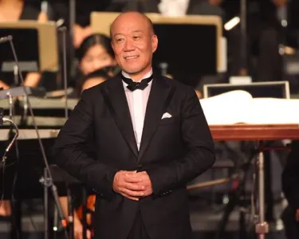
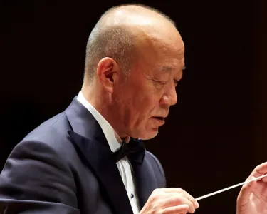
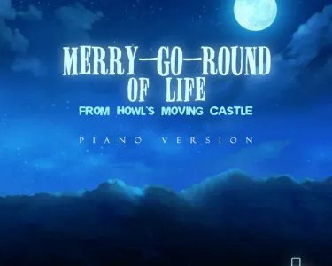

Joe Hisaishi
Joe Hisaishi, compositeur renommé, est célèbre pour sa collaboration avec le réalisateur Hayao Miyazaki du Studio Ghibli, où sa musique devient l'âme des personnages et des récits, capturant des émotions changeantes et transmettant des thèmes profonds. Cette fusion entre la musique et l'image dans les films du Studio Ghibli illustre le pouvoir du cinéma à transcender les frontières culturelles.
Publié aujourd’hui à 14h20.
Photographie lors d’un concert symphonique
Joe Hisaishi : La Magie de la musique cinématographique
Joe Hisaishi, également connu sous son nom de naissance, Mamoru Fujisawa, est un compositeur de renommée mondiale, célèbre pour sa collaboration étroite avec le réalisateur japonais Hayao Miyazaki au sein du Studio Ghibli. Il est né le 6 décembre 1950 à Nagano, au Japon, et a acquis une notoriété exceptionnelle dans le domaine de la composition musicale, devenant ainsi une figure incontournable de l'industrie cinématographique.
La musique de Joe Hisaishi : Une composante essentielle
La contribution de Joe Hisaishi à l'art cinématographique est particulièrement notable dans les films du Studio Ghibli, et plus spécifiquement dans ceux de Hayao Miyazaki. Sa musique ne se limite pas à un simple accompagnement des scènes, elle devient une composante essentielle de l'expérience cinématographique. Elle fait bien plus que souligner l'action à l'écran, elle s'infiltre au cœur des personnages et de leurs récits, jouant un rôle fondamental.
Photographie lors d’un concert symphonique
La puissance de "Merry Go Round of Life"
Un exemple emblématique de la puissance de la musique de Joe Hisaishi se trouve dans le thème "Merry Go Round of Life" du film "Le Château Ambulant". Cette mélodie incarne à la perfection la fusion harmonieuse entre la musique et le cinéma qui caractérise les créations du Studio Ghibli.
L'âme des personnages et des histoires
La musique dans les films de Miyazaki ne se contente pas de remplir une fonction d'arrière-plan ; elle devient véritablement l'âme des personnages et des histoires. Elle évolue en parfaite synchronisation avec les protagonistes, capturant les émotions en constante mutation qui jalonnent leur périple. Chaque thème musical est minutieusement composé pour refléter les moments clés de l'intrigue, amplifiant ainsi l'impact émotionnel des scènes sur le public.
Cover spotify
Transmettre des thèmes profonds
La musique de Joe Hisaishi dépasse le simple soulignement des émotions ; elle transmet également les thèmes profonds des films, explorant des concepts tels que la découverte de soi, l'amour, la compassion, et l'aventure. Ces compositions deviennent un puissant vecteur émotionnel, plongeant les spectateurs dans un état de résonance profonde avec les personnages et leurs expériences.
La symbiose de la musique et de l'image
En somme, la musique de Joe Hisaishi transcende son rôle conventionnel dans les films. Elle devient une force motrice émotionnelle, un fil conducteur qui relie les spectateurs aux mondes imaginaires créés par Miyazaki. La symbiose entre la musique et l'image dans les productions du Studio Ghibli est un exemple saisissant de la puissance de l'art cinématographique pour émouvoir, inspirer, et transcender les frontières culturelles.